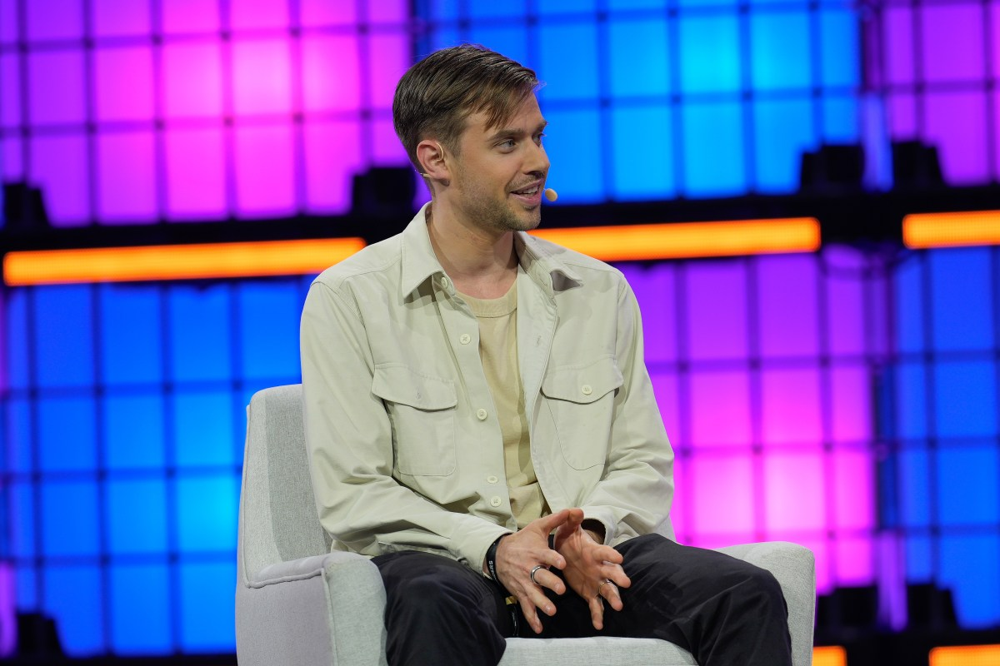
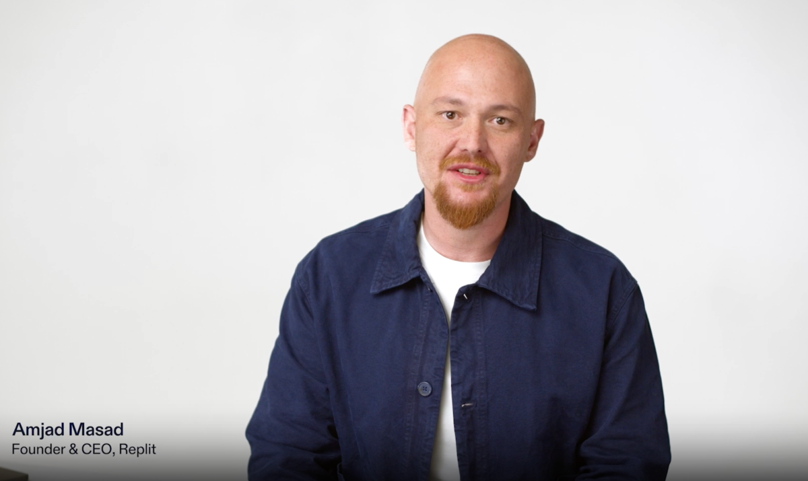
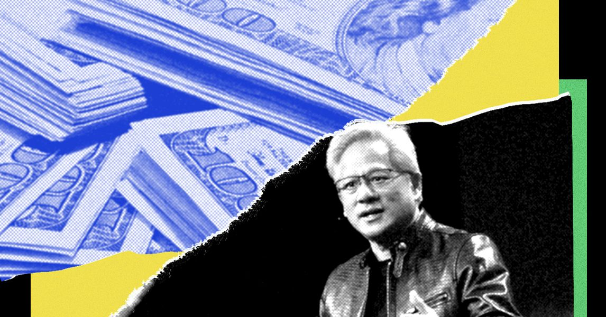
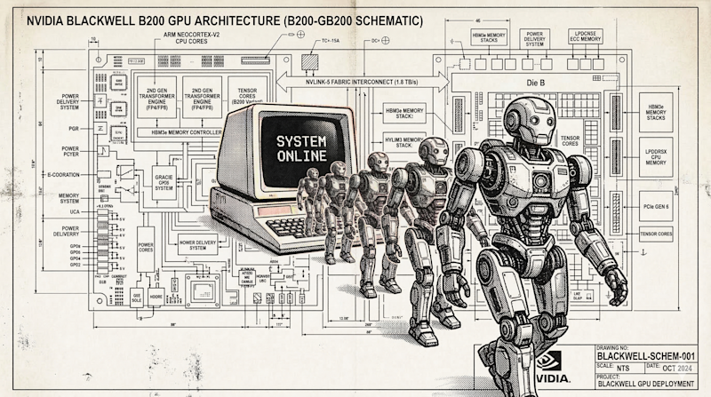
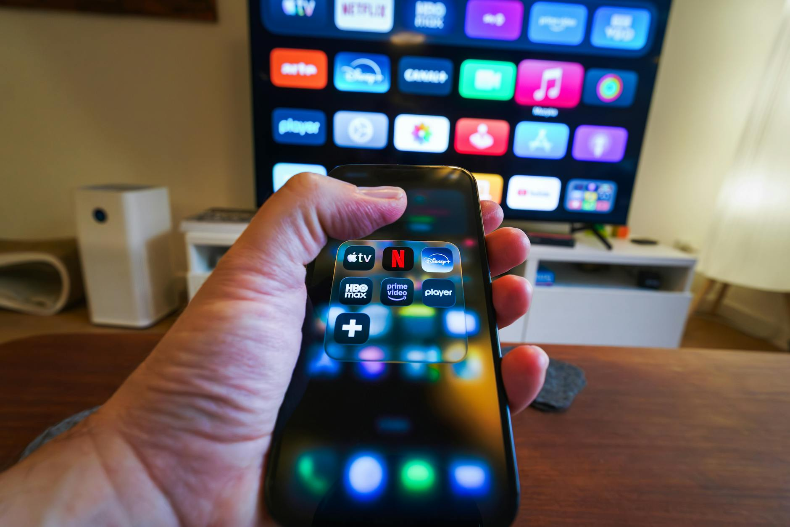
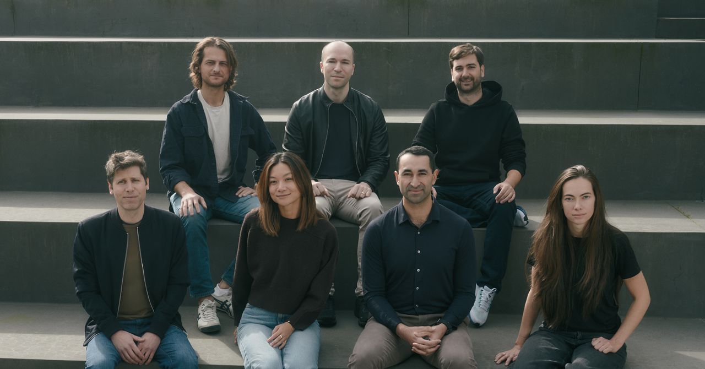

AI DAILY
AI 行业日报
2026年3月12日 · 精选 10 条
01融资收购
Lovable 单月新增 1 亿美元营收，全公司只有 146 人

瑞典 vibe-coding 公司 Lovable 2 月 ARR 突破 4 亿美元，其中单月就新增了 1 亿美元营收。去年 11 月 ARR 还是 2 亿，4 个月翻了一倍。
全公司 146 名员工，用户超 800 万，去年 12 月刚以 66 亿美元估值完成 3.3 亿美元 B 轮融资。财富 500 强企业也在用。
INSIGHT
人均年营收接近 270 万美元——这个数字过去只在对冲基金和加密交易所出现过。vibe-coding 的增长曲线说明需求端不缺，真正的问题是用户做出来的东西能不能长期运行和维护。
02融资收购
Replit 估值半年翻 3 倍到 90 亿美元

Replit 完成 4 亿美元 D 轮融资，估值 90 亿美元，由 Georgian Partners 领投。半年前的 C 轮估值还是 30 亿。
同步发布 Replit Agent 4，将设计和代码整合在同一个环境里。创始人 Amjad Masad 身价首次突破 20 亿美元。a16z、Coatue 等跟投。
INSIGHT
Lovable 和 Replit 同一天放出融资消息，vibe-coding 赛道一周内吸了超 7 亿美元。两家打法不同——Lovable 走"零代码出产品"，Replit 走"Agent 替你写代码"。分歧背后是同一个赌注：写代码的人会越来越少。
03行业动态
Nvidia 砸 260 亿美元自己训开放权重模型

据 Wired 披露的财务文件，Nvidia 计划未来 5 年投入 260 亿美元训练自己的开放权重 AI 模型，覆盖模型开发、算力基建、研究人才和生态合作。
模型横跨六大领域：Clara（医疗）、Earth-2（气候）、Nemotron（推理）、Cosmos（机器人）、GR00T（具身智能）、Alpamayo（自动驾驶）。
INSIGHT
260 亿约等于 8 个 GPT-4 的训练成本。卖铲子的人下场挖金矿——Nvidia 训的模型天然为自家硬件优化，开放权重的"开放"程度和硬件锁定之间的平衡，才是真正值得关注的细节。
04技术突破
Nvidia 开源 Nemotron 3 Super：Mamba+Transformer 混合架构

Nvidia 发布 Nemotron 3 Super，120B 总参数、12B 活跃参数的混合 MoE 模型。三种层交替：Mamba-2 处理长序列、Transformer 做精确推理、Latent MoE 做专家路由。
支持 100 万 token 上下文窗口，用 NVFP4 格式原生 4-bit 训练（不是训完再量化），在 Blackwell GPU 上吞吐量提升 5 倍。25 万亿 token 预训练。
INSIGHT
Mamba + Transformer + MoE 三种架构塞进一个模型——这不只是堆料，而是用 SSM 换内存、Transformer 换精度、MoE 换计算效率的工程权衡。120B 里只激活 12B，对部署成本的影响比参数量本身更关键。
05产品发布
Sora 要集成进 ChatGPT 了
据 The Information 3 月 11 日报道，OpenAI 计划将视频生成工具 Sora 集成到 ChatGPT 主界面中，类似 DALL·E 的集成方式。独立 Sora App 会继续运行。
背景是 Sora 独立 App 表现不理想：今年 1 月安装量环比下滑 45%，用户付费也在下降，已跌出美区 App Store 前 100。
INSIGHT
独立 App 打不过就并回主产品——和 Google 把 Bard 并入搜索的逻辑一样。Sora 的问题不在技术，而在使用场景太窄：多数人不会专门打开一个 App 去生成视频，但在 ChatGPT 对话中顺手生成一段，门槛就完全不同了。
06融资收购
Netflix 最高 6 亿美元收购 Ben Affleck 的 AI 影视公司

Netflix 收购 Ben Affleck 创办的 AI 影视工具公司 InterPositive，据 Bloomberg 报道总价最高可达 6 亿美元（含业绩对赌）。这是 Netflix 历史上规模最大的收购之一。
InterPositive 的技术能基于拍摄素材构建 AI 模型，实现后期调色、补光、特效等操作。Affleck 本人以高级顾问身份加入 Netflix。技术仅对 Netflix 创作伙伴开放，不对外销售。
INSIGHT
让奥斯卡导演来做 AI 影视工具，解决了好莱坞对 AI 最大的抵触——"你们懂创作吗"。Netflix 不卖这个工具而是作为创作者福利，本质是用 AI 工具做平台锁定：想用这套后期系统，就只能在 Netflix 拍片。
07人事变动
千问后训练负责人郁博文离职，据报道加入字节
阿里通义千问团队后训练负责人郁博文确认离职。此前千问已有多名核心成员相继离开，被媒体称为"灵魂人物出走"。
据报道，郁博文将加入字节跳动 Seed 团队，负责视觉模型和多模态后训练方向。Seed 团队由前 Google DeepMind 研究副总裁吴永辉领导，近年持续从各大厂吸纳人才。
INSIGHT
后训练是决定模型"好不好用"的最后一公里——RLHF、对齐、安全，都在这个环节。千问连续失血的不是基座研究团队，而是产品化能力最强的人。字节 Seed 团队的策略很清楚：不争论谁的基座模型更强，先把后训练人才抢到手。
08市场数据
a16z Top100 GenAI 应用榜：三个平行市场浮现
a16z 发布第 6 版 GenAI Top100 榜单。ChatGPT 和 Claude 的应用生态仅 11% 重叠（41 个共同应用），几乎全是 Slack、Notion 这类通用工具。
移动端 Top50 中中国开发的 App 占 22 个，但其中仅 3 个主要在中国使用，其余全球化运营。全球 AI 应用市场呈现美国/西方、中国、俄罗斯三大独立生态。
INSIGHT
11% 的重叠率意味着 ChatGPT 和 Claude 并不是在同一个市场里抢份额，而是各自长出了不同的应用生态。中国 App 占移动端近一半但多数在海外运营——中国团队做工具出海这条路径，比做模型出海实际得多。
09行业动态
OpenAI 正在追赶 Claude Code，编程市场争夺白热化

据 Wired 深度报道，Anthropic 的 Claude Code 年化营收已达 25 亿美元，占企业客户支出的一半以上。去年 5 月上线，11 月就破 10 亿，4 个月后再翻倍。
OpenAI 的 Codex 年化营收约 10 亿美元，Altman 称编程是"数万亿美元的市场"。Anthropic 整体 run-rate 达 190 亿美元，估值 3800 亿。
INSIGHT
Claude Code 从上线到 25 亿 ARR 用了不到 10 个月。这个速度说明 AI 编程的付费意愿远超聊天——开发者按产出计价，不按对话计价。Anthropic 从"ChatGPT 的备选"变成了编程赛道的领跑者，攻守已经互换。
10融资收购
LeCun 和谢赛宁的世界模型公司 AMI 种子轮融 10.3 亿美元

图灵奖得主 Yann LeCun 创办的 AMI Labs 完成 10.3 亿美元种子轮融资，估值 35 亿美元。成立仅 4 个月，这是欧洲有记录以来规模最大的种子轮。
DiT 论文作者谢赛宁担任首席科学官，团队多来自 Meta FAIR。技术路线基于 LeCun 2022 年提出的 JEPA 框架（联合嵌入预测架构），走世界模型路线，不走 LLM。Bezos、Schmidt 等参投。
INSIGHT
LeCun 一直公开批评 LLM 路线的局限性，现在他拿到 10 亿美金来证明自己的替代方案——这在学术界叫 put your money where your mouth is。JEPA 能不能真正超越 LLM 不好说，但世界模型赛道有了一个足够重量级的玩家入场了。
由 Zayen知览 整理 · 构建者视角